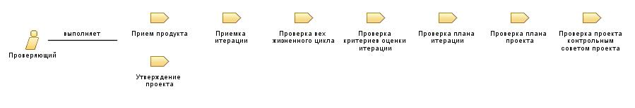

| Роль: Проверяющий |
 |
|
 |
||
| Изменяет |
|
|
|---|---|---|
|
Исполнитель роли Проверяющий участвует в важнейших проверках проекта. Если в их ходе будут выявлены критические ошибки в планировании или слишком низкая производительность, проект может быть отменен. |
| Квалификация |
Исполнитель роли Проверяющий должен обладать многолетним опытом в сфере бизнеса (включая формулирование контрактов и ведение переговоров), опытом управления техническими проектами, проектами разработки программ, а также ярко выраженной способностью к принятию решений на уровне оперативного руководства. Проверяющий обязан полностью понимать принципы управления рисками и быть способным принимать решения на основе неполной или нечеткой информации. |
|---|---|
| Подходы к назначению |
Стандартной стратегии поиска исполнителей не существует. Решение принимается с учетом особенностей проверяемого продукта и задействованных коллективов, а также доступности сотрудников, принимающих участие в проверке. |
© Copyright IBM Corp. 1987, 2006. Все права защищены.. |